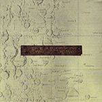
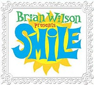
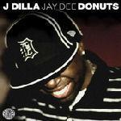
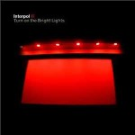
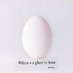
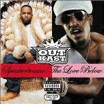
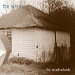

10 Great Records That We Really Should Have Reviewed (NR10)
We try our very best to review as many albums as possible, we really do. Every so often, however, a significant offering slips through the editorial net. In this special feature, David Coleman looks back at some of the more criminal omissions in our ten year history.
. . .
10. Low
"Things We Lost In The Fire"
(2001)
Buy it from Insound
When I eventually discovered Low in 2002 (thanks Audiogalaxy), it was through a track called Dinosaur Act from their fifth album Things We Lost In The Fire. I wrongly assumed it was a late 90s release, but soon embraced its parent album and began to learn more about the slowcore pioneers. While Low’s sound has changed in recent years, this beautifully quiet record still represents their greatest achievement. That it slipped innocently under the No Ripcord radar, which wasn't exactly the most sophisticated in those early days, is hardly a surprise. It’s a forgivable omission, I think.
9. Brian Wilson
"SMiLE"
(2004)
Buy it from Insound
A musical legend comes in from the cold and where are the No Ripcord correspondents? Sat at home, obsessing over the Arcade Fire's Funeral apparently. SMiLE was a monumental release and it provided a welcome return to relevance for its creator. Wilson’s follow-up didn't quite scale the same heights, however; in the interests of consistency, we didn't bother reviewing that either.
8. J Dilla
"Donuts"
(2006)
Buy it from Insound
A million words have been written about James Yancey aka J Dilla, who died, aged 32, from the complications of lupus in 2006. We contributed a couple of hundred in our review of the re-released Ruff Draft EP, but the joyous instrumental album Donuts definitely deserved a few paragraphs more. Donuts is Yancey’s greatest achievement, after all, and the fact that so many of hip-hop's luminaries have borrowed its beats to inspire new material is testament to his immense talent as a producer. It’s well worth a listen if you missed all the fuss in 2006.
7. Interpol
"Turn On The Bright Lights"
(2002)
Buy it from Insound
When I interviewed Sam Fogarino in January 2003, a month after we'd named his band's first album our #2 record of 2002, I neglected to mention the fact that we hadn't even reviewed it. Interpol's stock may have slumped in recent years but this plucky debut remains one of the stronger rock albums of the decade.
6. Madvillain
"Madvillainy"
(2004)
Buy it from Insound
A significant number of No Ripcord writers loved this record; it was our #9 album of 2004; we were going through a crazy MF DOOM phase at the time. In spite of all of these factors, we still forgot (I can only assume that was the reason) to review Madvillainy. For what it's worth, I consider this the strongest record that DOOM and Madlib have lent their considerable talents to, and that's really saying something. One of the landmark hip-hop releases of the last ten years.
 5. Deerhunter
5. Deerhunter
"Cryptograms & Microcastle"
(2007 & 2008)
Buy it from Insound
I know how it looks...but we really don't hold a grudge against Bradford Cox. We're just kind of unorganised/lazy sometimes. Microcastle was our #6 record of 2008 and it probably deserved even better than that. Given our enthusiasm, I really can't believe we failed to review it. 2007’s breakthrough Cryptograms wasn't quite as focused, but it still deserved a glowing write-up. My apologies, Brad – it won't happen again.
4. Wilco
"A Ghost Is Born"
(2004)
Buy it from Insound
We raved about Yankee Hotel Foxtrot and were one of few publications to really get behind Sky Blue Sky but, for reasons I still can't quite fathom today, we never got round to reviewing Wilco's stunning A Ghost Is Born. Such an omission seems almost criminal in hindsight, but the summer of 2004 was a chaotic one for the site – I was swanning around in the South Pacific at the time, leaving editorial duties to Cam Lindsay and Ben Bollig. They did a great job of keeping the site ticking over, but this Wilco offering evidently slipped through the net. A Ghost Is Born was waiting patiently for me when I returned, just one of hundreds of promo discs that had collected in the lobby of my student house. It took me a few years to really appreciate it, but in my eyes it's a very close second to YHF in the Wilco catalogue. Jeff Tweedy's awesome spasmodic solo on At Least That's What You Said deserves a special mention, too.
3. Outkast
"Speakerboxxx/The Love Below"
(2003)
Buy it from Insound
Did we really ignore one of the most successful albums of 2003, a sprawling double disc set that spawned one of the most memorable hit singles of the decade?
Yes. Yes we did.
2. The Wrens
"The Meadowlands"
(2003)
Buy it from Insound
Prior to the publication of this article, a search for “wrens” on No Ripcord returned zero results. Can you believe that? We haven’t even namedropped them in a review. Disgraceful. The Meadowlands is undoubtedly one of my top ten albums of the decade and the fact that we neglected to review it in 2003, and again on its UK re-release in 2006, makes me wince even now. Intelligent guitar-pop does not come any better than this. The only thing lacking here is a follow-up.
1. Radiohead
"Kid A"
(2000)
Buy it from Insound
I'd just started university; I didn't have Internet access; I was too busy listening to Kid A? You’re right to question these dismal excuses, none of which are sufficient to justify No Ripcord’s wanton neglect of – ok, I’m going to stick my neck out here – the greatest album of the decade. As the site was pretty much a one man operation back in 2000, I have to take this one squarely on the chin myself.
Unforgivable.
3 April, 2009 - 13:20 — David Coleman